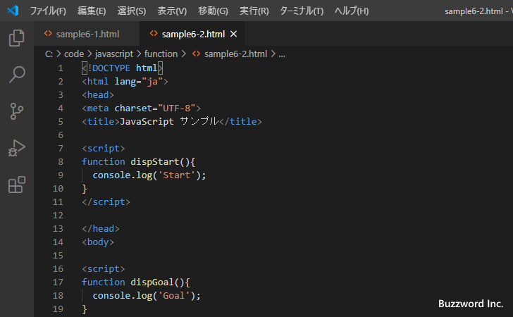

コマンドプロンプトからファイルを開く
Visual Studio Code はコマンドプロンプトから起動することができますが、コマンドを実行するときにファイル名を指定することで Visual Studio Code を起動したときにファイルを開いたり、既に起動していた場合は新しいウィンドウや既存のウィンドウでファイルを開くことができます。ここではコマンドプロンプトからファイルを開く方法について解説します。
Visual Studio Codeを起動してファイルを開く
Windows 環境を例に試してみます。 PATH が設定されている場合、コマンドプロンプトから code と実行することで Visual Studio Code を起動することができますが、引数にファイル名を指定することで起動したあとで指定したファイルを開くことができます。
code ファイル名
では実際に試してみます。コマンドプロンプトを起動し、開きたいファイルが格納されているディレクトリに移動したあとで次のように実行します。
code sample6-1.html
Visual Studio Code が起動し、コマンド実行時に指定したファイルが開きました。

複数のファイルをまとめて開く
複数のファイルを開く場合には空白で区切ってファイル名を記述してください。
code ファイル名1 ファイル名2
では実際に試してみます。コマンドプロンプトを起動し、開きたいファイルが格納されているディレクトリに移動したあとで次のように実行します。
code sample6-1.html sample6-2.html
Visual Studio Code が起動し、コマンド実行時に指定した 2 つのファイルが開きました。
現在のウィンドウでファイルを開く
既に Visual Studio Code が起動している状態で、現在のウィンドウに追加する形でファイルを開くにはコマンドプロンプトから次のように実行します。(ファイルの場合は -r を付けても何も指定しなくても同じ結果となります)。
code ファイル名 code -r ファイル名
それでは実際に試してみます。次のように Visual Studio Code が起動してファイルを一つ開いている状態から試します。
コマンドプロンプトを起動し、開きたいファイルが格納されているディレクトリに移動したあとで次のように実行します。
code -r sample6-2.html
既存のウィンドウに追加する形でファイルが開きました。

新しいウィンドウでファイルを開く
既に Visual Studio Code が起動している状態で、現在のウィンドウとは別に新しいウィンドウを開いてファイルを開くにはコマンドプロンプトから次のように実行します。
code -n ファイル名
それでは実際に試してみます。次のように Visual Studio Code が起動してファイルを一つ開いている状態から試します。
コマンドプロンプトを起動し、開きたいファイルが格納されているディレクトリに移動したあとで次のように実行します。
code -n sample6-2.html
既存のウィンドウとは別の新しいウィンドウが開き、指定したファイルが開きました。
ファイルを開き指定した行と列の位置にカーソルを移動する
ファイルを開いたあとで、指定した行と列(列は省略可能)の位置にカーソルを移動させることができます。次のように指定します。
code -g ファイル名:行数(:列数)
開いたファイルの 5 行目の先頭位置にカーソルを移動するには次のように実行します。
code -g ファイル名:5
開いたファイルの 5 行目の 7 列目の位置にカーソルを移動するには次のように実行します。
code -g ファイル名:5:7
既存のウィンドウで開くか新しいウィンドウで開くのかは -r 又は -n を併せて記述することで指定できます。
それでは実際に試してみます。コマンドプロンプトを起動し、開きたいファイルが格納されているディレクトリに移動したあとで次のように実行します。
code -r -g sample6-1.html:5:12
既存のウィンドウでファイルが開き、指定した位置にカーソルが移動しました。
-- --
コマンドプロンプトからファイルを開く方法について解説しました。
( Written by Tatsuo Ikura )

著者 / TATSUO IKURA
初心者～中級者の方を対象としたプログラミング方法や開発環境の構築の解説を行うサイトの運営を行っています。